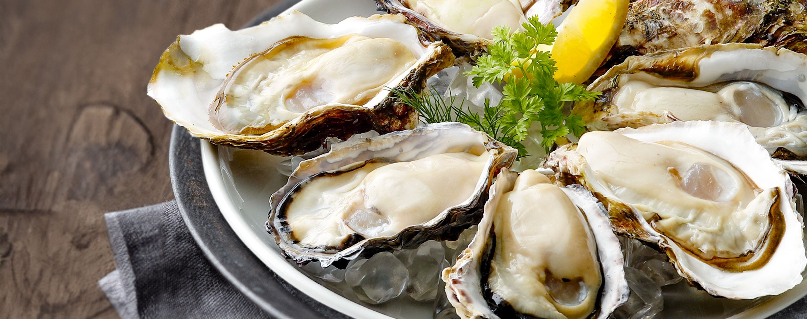
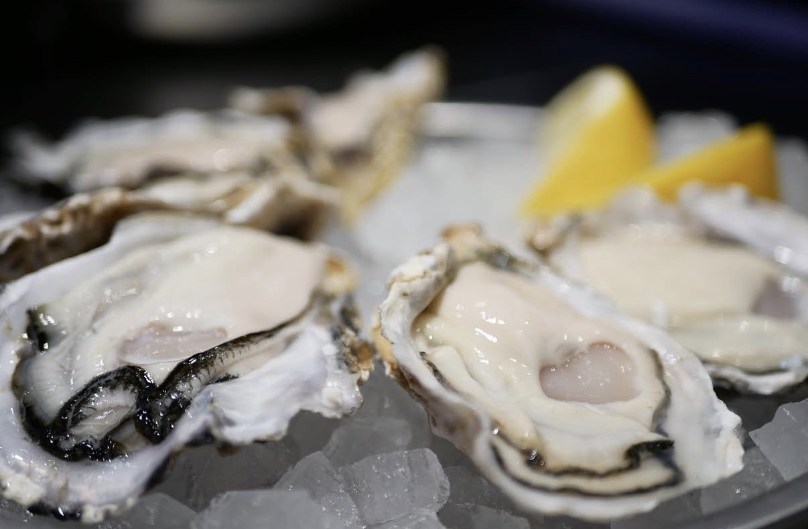
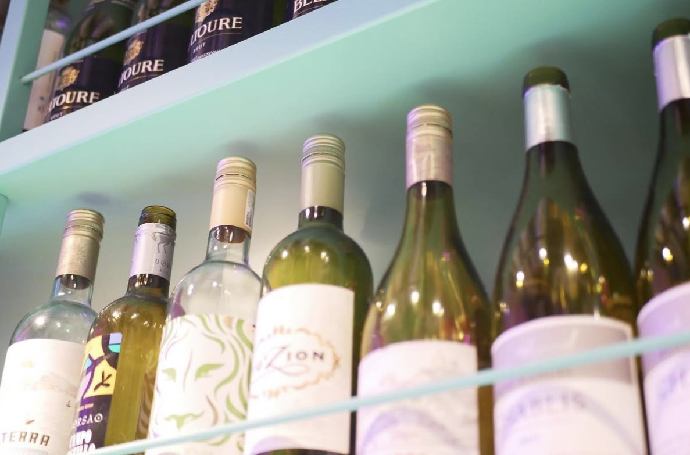
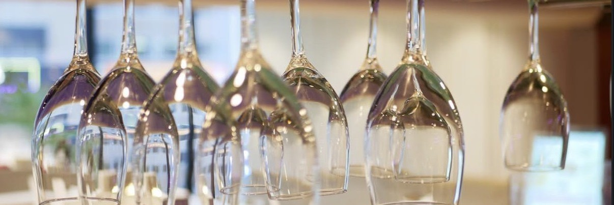
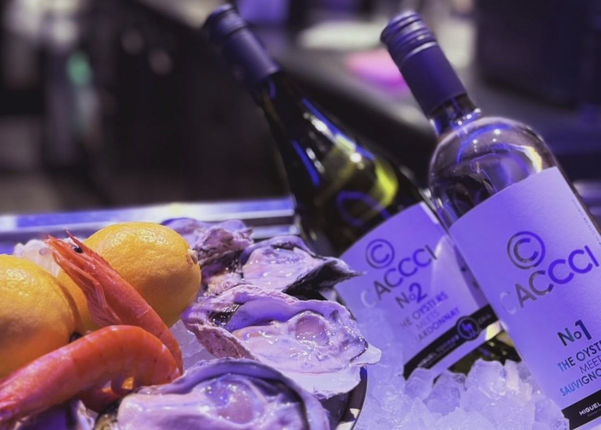
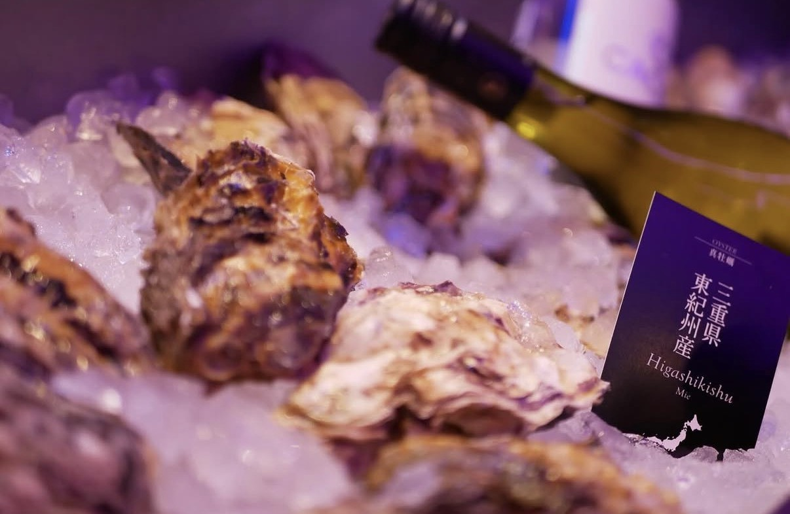
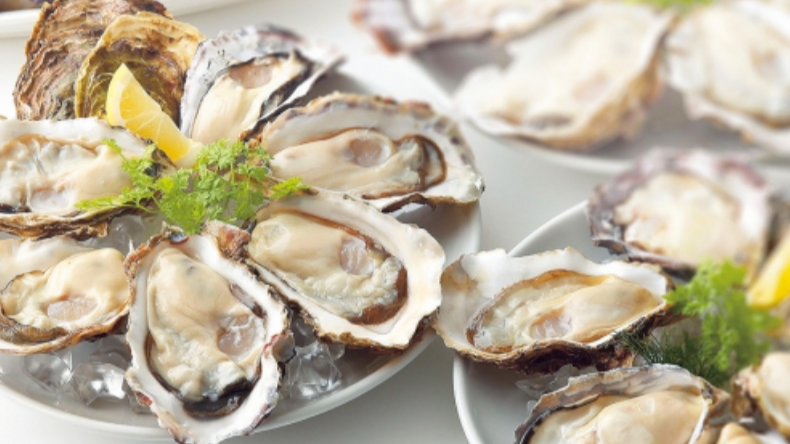

Why are our oysters safe?
Source: 8TH SEA OYSTER official website
More Explanation / See details


General Oyster's oysters are thoroughly cleaned of viruses and bacteria using a unique deep seawater purification system.
"Special oysters with the industry's highest standards of safety"We realized this.

About the safety of 8TH SEA OYSTER
"8TH SEA OYSTER" is located in Toyama Bay.deep ocean waterThis is a brand that uses water to purify oysters at a land-based facility. Deep ocean water is seawater on Earth.90% or moreIt is a rich resource that occupies the area, but sunlight does not reach it and it does not mix with surface water.Depth of water more than 200mrefers to seawater. It is known as the ``mysterious water of the earth,'' which circulates slowly over thousands of years.


A common method of purifying oysters is to remove the seawater taken in by the oysters.Sterilization with ultraviolet lightThis is a way to cleanse your body. butBecause it is affected by the amount of water and irradiation conditions.However, there were issues with sterilization control.
At 8TH SEA OYSTER, in order to solve this problem,Does not rely on UV sterilizationUtilizes the cleanliness of deep ocean water itself. Oyster ecology (in a day)Approximately 400 liters(breathing seawater) to ensure deep water enters the oyster's body.circulationThis achieves a high degree of purification.
General Oyster Group is developing an oyster purification method using deep ocean water from Nyuzen Town, Toyama Prefecture.Obtained patent(Patent No. 6240037). This technology is attracting attention in the oyster farming industry nationwide, and is friendly to both oysters and the environment.sustainable purification methodsIt has been established as


The profound world of oysters, whose expression changes depending on the season
Source: About oysters - General Oyster
The secret of oyster season and taste
Many people seem to think of oysters as a "winter" food, but in Europe and America,"You should only eat oysters when there is an "r" in the month."It was said. This is the spawning season for true oysters.May to AugustApparently it was said that way because it tastes worse than in winter.
However, in JapanThere are some production areas where you can get delicious true oysters even in summer.Recently, the breeding of true oysters has progressed.“Triploid” oystersAlso available all year round. Also, it is in season in the summer.rock oystersYou can enjoy delicious oysters anywhere throughout the year.

At the General Oyster storeRaw oysters from all over the country all year roundYou can enjoy it. Please enjoy the delicious characteristics grown in each sea from the north to the south.Compare foodPlease try it.
| Production area | January | February | March | April | May | June | July | August | september | October | november | december |
|---|---|---|---|---|---|---|---|---|---|---|---|---|
| Hokkaido Lake Saroma, Senhoji, Yakumo (true oyster diploid) |
◎ | ◎ | ◎ | ○ | ○ | ○ | ○ | ○ | ◎ | ◎ | ||
| Iwate Prefecture Kamaishi Bay, Otsuchi Bay, etc. (true oyster diploid) |
◎ | ◎ | ◎ | ◎ | ◎ | ◎ | ||||||
| Miyagi Prefecture Ogatsu, Shizugawa et al. (true oyster diploid) |
◎ | ◎ | ◎ | ○ | ◎ | ◎ | ◎ | |||||
| Mie prefecture Higashi Kishu (true oyster diploid) |
◎ | ◎ | ◎ | ◎ | ◎ | |||||||
| Hyogo prefecture Aioi, Sakoshi, Murotsu and others (true oyster diploid) |
◎ | ◎ | ◎ | ◎ | ○ | ◎ | ◎ | ◎ | ||||
| Shimane Prefecture Oki (rock oysters) |
◎ | |||||||||||
| Okayama prefecture Mushiaki (rock oyster) |
○ | ○ | ◎ | |||||||||
| Hiroshima prefecture Jojima, Kurahashijima and others (true oyster diploid) |
◎ | ◎ | ◎ | ◎ | ◎ | ◎ | ◎ | ◎ | ||||
| Yamaguchi prefecture Oshima (true oyster triploid) |
○ | ○ | ○ | ○ | ○ | ○ | ○ | ○ | ○ | ○ | ◎ | ◎ |
| Tokushima prefecture Naruto/Uchinoumi (rock oysters) |
◎ | ◎ | ◎ | |||||||||
| Kagawa prefecture Shirakata (rock oyster) |
◎ | |||||||||||
| Fukuoka prefecture Itoshima/Moji (true oyster diploid) |
◎ | ◎ | ◎ | ◎ | ◎ | ◎ | ||||||
| Saga prefecture Karatsu (rock oysters) |
◎ | |||||||||||
| Oita prefecture Kamae/Oirijima (rock oysters) |
◎ | ◎ | ||||||||||
| Nagasaki prefecture Konagai/Goto Islands (rock oysters) |
○ | ◎ | ||||||||||
| Kagoshima prefecture Moroura Islands (rock oysters) |
◎ |
To enjoy oysters in the most delicious way,Production area and periodIt is important to be aware of this. Even at the same time of year, the taste is completely different depending on the production area.Compare food from north to southBy doing this, you can experience the depth of oysters.
Also, true oystersdiploidis the rich taste of winter,triploidhas stable quality throughout the year,rock oystersThe characteristics vary greatly depending on the type, such as the refreshing sweetness of summer. By enjoying oysters that are in season, you can enjoy the charm of oysters all year round without getting tired of them.
The important thing to understand when oysters are in season isglycogen(carbohydrates that serve as an energy source) andSpawningThis is the relationship. True oysters (diploid) store glycogen for spawning from winter to spring, making their flesh plump and rich in flavor. and in the summerUmami ingredients are used up in one egg layingAs a result, the flesh becomes thin and watery in the summer.
On the other hand, rock oysters are eaten in the summer.Spawning in several batchesTherefore, even though glycogen is consumed little by little, the body does not lose weight,Summer is the most nutritious period during the spawning season.It has the opposite characteristics to true oysters. Also,Triploid true oysters do not spawn.Therefore, glycogen remains in a good condition throughout the year.
At General Oyster, to improve the safety of raw oysters,Purification with deep ocean waterI'm doing it. When oysters are raised in deep ocean water,Increases essential mineral components contained in oystersI understand! Please enjoy our safe and nutritious raw oysters.
summary

The best pairing of oysters and wine
Source: About oysters - General Oyster
The best pairing of oysters and wine
“Lactic acid” and “succinic acid” contained in oystersWarming organic acidIt has the property of bringing out the flavor in hot dishes. Raw oysters that remain cold will not fully demonstrate this potential, but lemoncitric acidThe addition of this helps to balance the acidity, and when combined with the refreshing acidity of white wine, the flavor is brought out.
In other wordsRaw oysters + lemon + white wineis a perfect trio in which the roles of acids are divided. The lemon brings out the warm acidity, and the white wine brings the whole thing together, highlighting the minerality and sweetness of the oysters.
When heated, the warm organic acids of the oysters become more noticeable,Red wine high in lactic acidBoth have good compatibility. It goes well with medium-bodied Pinot Noir and Gamay with its clean acidity, and also goes well with Japanese seasonings using miso and soy sauce.
For white wine, such as ChablisA type with a cold taste and clear acidity.is the iron plate. The nuances of citrus and minerals complement the raw oysters squeezed with lemon.
By complementing the ``warming organic acid'' of oysters with lemon and wine, the aroma, acidity, and flavor are balanced, maximizing the real pleasure of the pairing. You can enjoy a variety of oysters throughout the year by choosing wines that match the temperature and seasoning of raw, grilled, or steamed oysters.